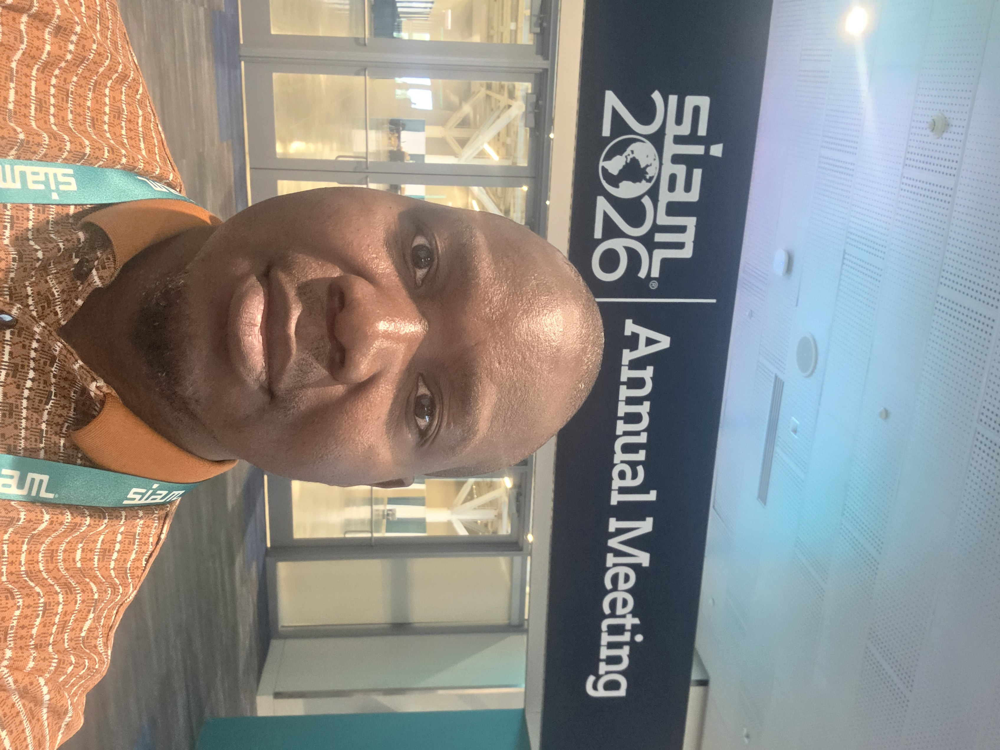

Maganizo Kapita
I'm Maganizo (Jacob) Kapita — call me Maga . From Chipini to the World. I am a Ph.D. candidate in Mathematics at Louisiana State University, working on computational stochastic analysis, machine learning, and data science.

My research is driven by a fascination with uncertainty — how we model it, learn from it, and use it to make better decisions in complex systems.
I'm Maganizo (Jacob) Kapita — call me Maga — a Ph.D. candidate in Mathematics at Louisiana State University, working at the intersection of computational stochastic analysis, machine learning, and data science.
My journey began in Chipini, a small village in Malawi — the Warm Heart of Africa, named for its warmth and hospitality — and has since carried me across borders and disciplines. That same curiosity and sense of purpose continue to shape my work today, as I bridge rigorous mathematical theory with real-world applications.
I serve as President of the LSU SIAM Student Chapter, where I work to build community among applied mathematicians and champion the value of mathematics in solving real-world problems.
Education
Teaching
Courses Taught (Instructor of Record)
Courses Graded / TA'd
Teaching Philosophy — Summary
- Care for the whole person (cura personalis) — knowing each student personally to support their learning.
- Learning through communication — group work and peer discussion to build teamwork and internalize concepts.
- Grounding concepts in real-life applications so mathematics feels relevant and motivating.
- Constructive, visualization-driven feedback that builds student confidence rather than just correcting errors.
Student Evaluations
Research & Publications
My research is in computational stochastic analysis, focused on learning the dynamics of stochastic reaction networks and Markov models directly from noisy, sparse event-time data. I develop statistical and machine-learning methods for inferring reaction rates and model structure when only irregular observation times are available, with applications ranging from epidemiological modeling to biomedical and sensor-anomaly detection. This work sits at the intersection of stochastic processes, Bayesian inference, and applied machine learning.
Publications
Selected Presentations
{{ pr.venue }} · {{ pr.date }}
Projects
Mentoring & Advising
Get in touch
Open to conversations on stochastic modeling, machine learning research collaborations, and academic or industry opportunities.
Miscellaneous
A space for anything else worth sharing — hobbies, favorite links, photos, notes.